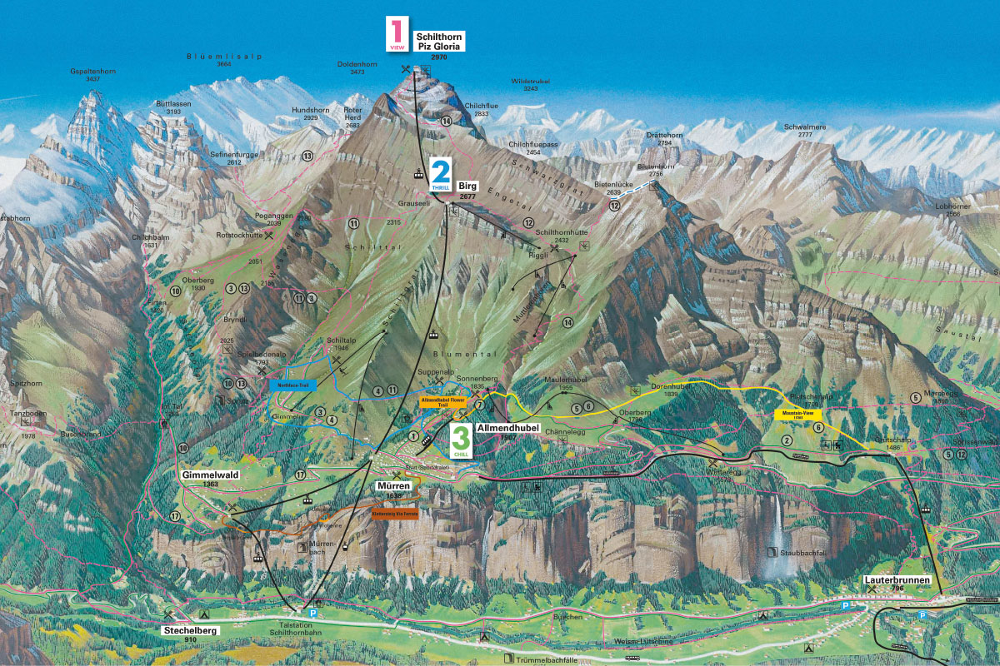

SCHILTHORN TRAIL MAP
TOP HIKING TRAILS
Schilthorn - Piz Gloria
Jungfraujoch
Niederhorn
Harder Kulm
Grimselwelt

Murren-Blumental-Allmendhubel
Distance: 2 miles
Difficulty: easy
Duration: 1.5 hours
Open
Murren-Winteregg-Grutschalp
Distance: 2.67 miles
Difficulty: easy
Duration: 1.5 hours
Open
Murren-Spielbodenalp-Rotstockhutte-Wasenegg-Schiltalp-Murren
Distance: 5.78 miles
Difficulty: moderate
Duration: 4.5 hours
Open
Allmendhubel-Blumental-Schiltalp-Spielbodenalp-Murren
Distance: 4.5 miles
Difficulty: challenging
Duration: 5 hours
Open
Allmendhubel-Dorenhubel-Grutschalp
Distance: 3.8 miles
Difficulty: easy/moderate
Duration: 2.5 hours
Open
Schilthorn-Engetal-Kanonenrohr-Blumental-Murren
Distance: 8 miles
Difficulty: difficult
Duration: 8.75 hours
Closed
Birg-Schilthorn
Distance: 3 miles
Difficulty: very difficult
Duration: 5 hours
Closed